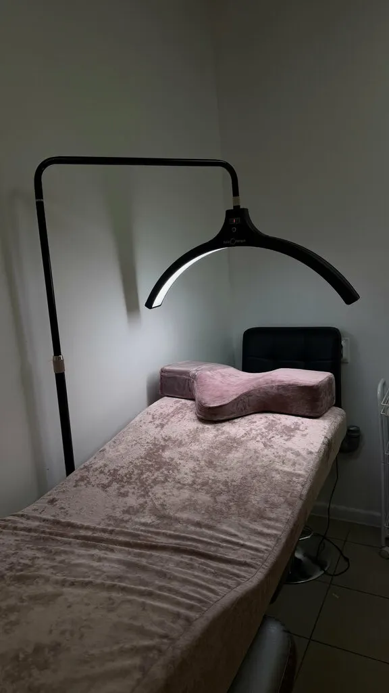
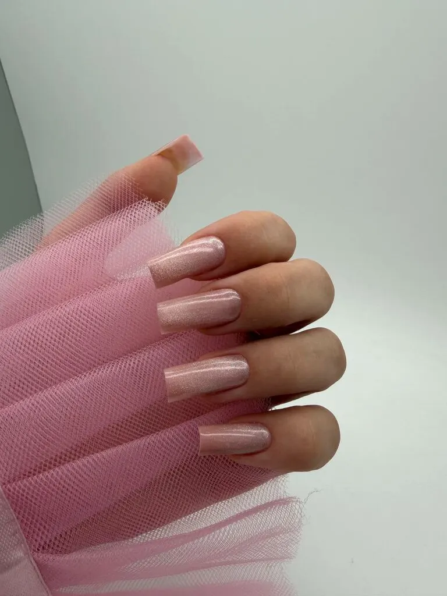
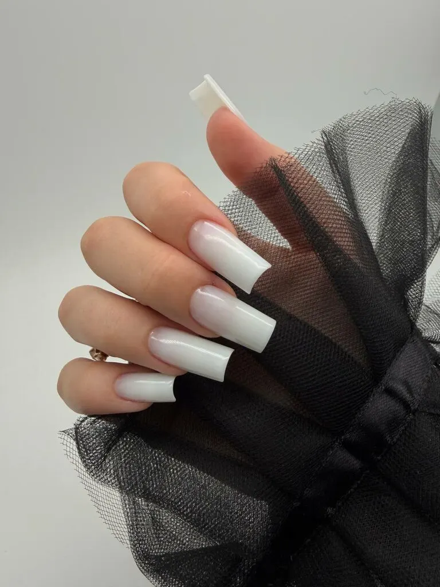
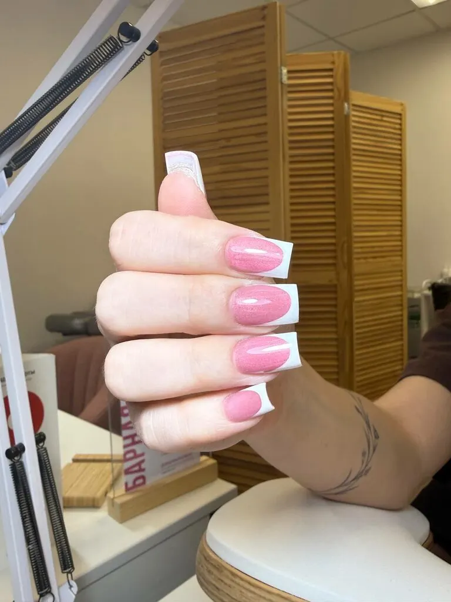
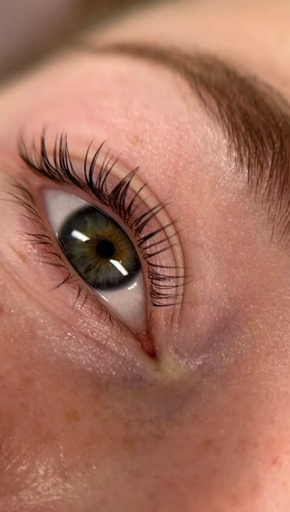
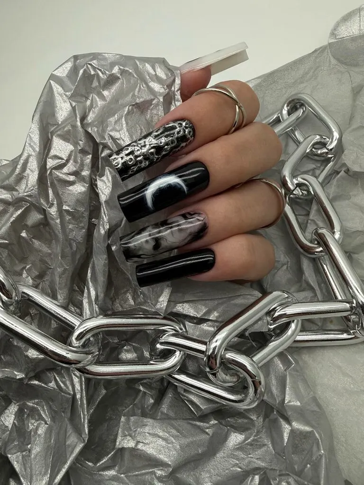
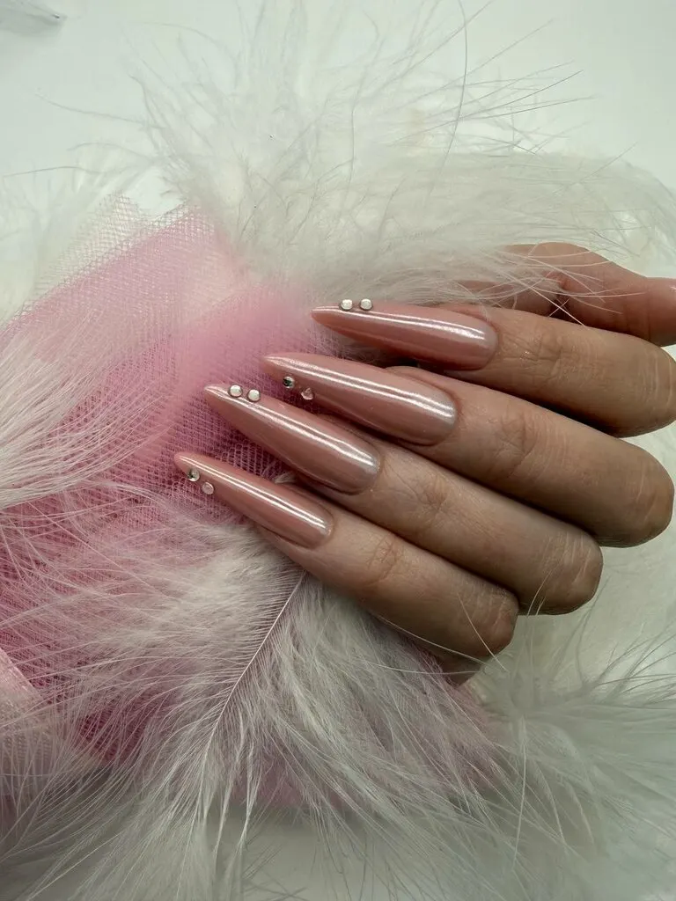
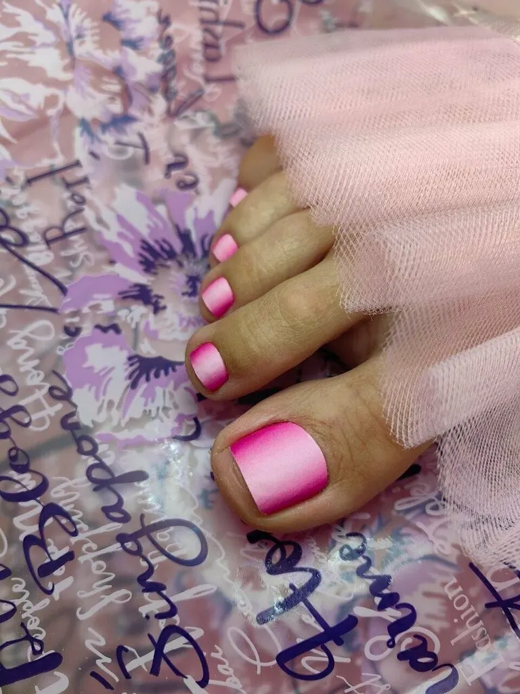
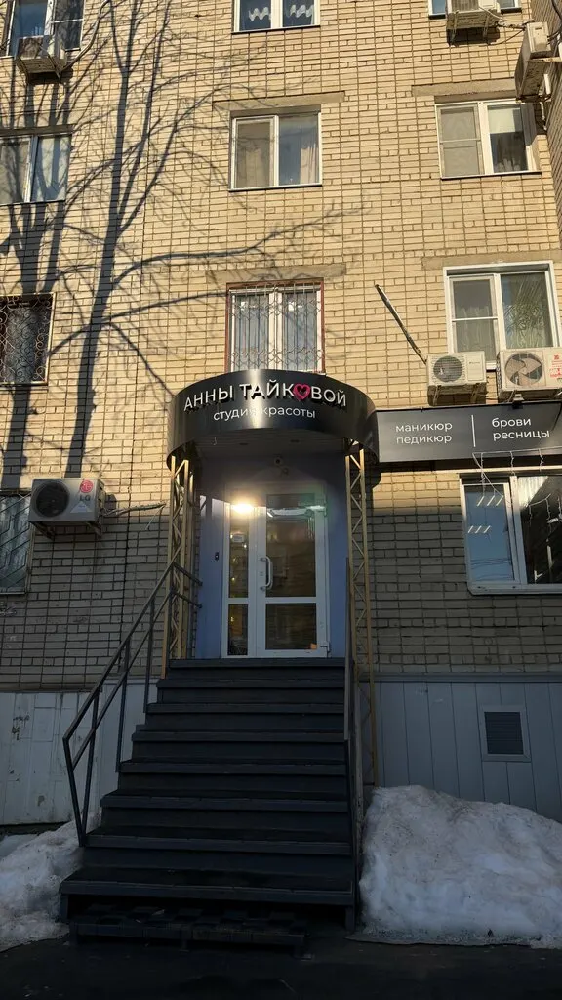

Студия красоты · Саратов
Ногти, брови, ресницы в Саратове – с чаем и сериалом
Маникюр, педикюр, наращивание ресниц, брови на Горького, 13/1. Из отзыва на Картах: «всегда наливают чай или кофе, включают любимые сериалы».

Услуги и цены
Маникюр, педикюр, наращивание, брови и ресницы: цена названа до записи.
Маникюр
- Маникюр + покрытиеснятие, комбинированный маникюр, укрепление гелем, ремонт трещин, однотонное покрытие1 500 ₽
- Маникюр + покрытие + френчто же, с покрытием френч1 800 ₽
- Наращивание ногтейверхние формы или гелевые типсы, однотонное покрытие2 000 ₽
Педикюр
- Педикюр + покрытиеобработка стопы Smart-диском, пальчики в комбинированной технике, гель-лак1 800 ₽
- Педикюр + покрытие, только пальчики1 500 ₽
Брови
- Коррекция + окрашивание бровейпинцетом или воском, краской или хной1 000 ₽
- Ламинирование + окрашивание + коррекция бровей1 400 ₽
Ресницы
- Наращивание, объём 1,5Dкукла, лиса, стрелка, мокрый эффект без доплаты1 300 ₽
- Наращивание, объём 2Dкукла, лиса, стрелка, мокрый эффект без доплаты1 400 ₽
- Ламинирование ресницс окрашиванием и ботоксом1 800 ₽
Цены взяты с карточки студии на Яндекс.Картах (обновлено 15 сентября), там же полный список услуг. Актуальность уточняйте при записи.
Как проходит визит
- 01
Выбираете услугу
Маникюр, педикюр, наращивание, брови или ресницы: цены в списке выше.
- 02
Записываетесь онлайн
День и время – в форме на этой странице, сообщение уйдёт студии в Telegram или WhatsApp.
- 03
Приходите на Горького, 13/1
Над входом вывеска «Анны Тайковой, студия красоты».
- 04
Оплачиваете в студии
Наличными, переводом, безналичной оплатой или через СБП, в студии есть Wi-Fi.



Что отмечают гости в отзывах
Атмосфера
99 % положительных отзывов, по 67 отзывам.
Компетентность
100 % положительных отзывов, по 49 отзывам.
Интерьер
100 % положительных отзывов, по 18 отзывам.
Кофе
100 % положительных отзывов, по 21 отзыву.
Отзывы с Яндекс.Карт
«Очень нравится салон, мастера профессионалы своего дела, маникюр всегда идеальный, любые мои задумки в дизайне всегда воплощали в жизнь, атмосфера в студии приятная, всегда наливают чай или кофе, включают любимые сериалы, одно наслаждение!»
Ирина Грачева · 24 сентября
«Посещала на днях данный салон. Осталась под большим впечатлением! Очень приятный персонал, хороший сервис, предложили различные напитки на выбор. Была на наращивании ресниц, мастер прислушался к моим пожеланиями, работа сделана качественно и недорого. Хочу вернуться на педикюр. Спасибо девочкам.»
Виктория Хахалева · 18 июля
«Нравится процедура в 4 руки, можно сразу оформить брови и сделать маникюр. Все мастера располагающие к себе, очень хорошие, в салоне спокойная атмосфера, предлагают напитки.»
Даша Желнова · 22 апреля
Отзывы с карточки на Яндекс.Картах, без правок.
Частые вопросы
Как найти студию?
Саратов, улица имени А.М. Горького, 13/1. Над входом вывеска «Анны Тайковой, студия красоты».
Можно ли записаться без звонка?
Да: выберите услугу, день и время в форме на этой странице или напишите студии в Telegram.
Чем можно оплатить?
Наличными, банковским переводом, безналичной оплатой, онлайн или через СБП: так указано на карточке студии на Яндекс.Картах.
Что вы делаете?
Женский и мужской маникюр и педикюр, наращивание ногтей, дизайн, комбинированный и аппаратный маникюр, Smart-педикюр, брови и ресницы – по карточке студии на Яндекс.Картах.
До которого часа вы работаете?
До 21:00 – так указано на карточке на Яндекс.Картах. График по дням уточняйте при записи.
Есть ли подарочный сертификат?
Да, на карточке студии отмечено: есть подарочный сертификат.
Работы студии
Фото с карточки студии на Яндекс.Картах.




Как нас найти

улица имени А.М. Горького, 13/1, Саратов
Над входом вывеска «Анны Тайковой, студия красоты: маникюр, педикюр, брови, ресницы». Работаем до 21:00.
Открыть на Яндекс.КартахЗапишитесь онлайн или напишите в Telegram
- Адрес
- улица имени А.М. Горького, 13/1, Саратов
- Часы
- до 21:00
- Телефон
- +7 (919) 834-03-77